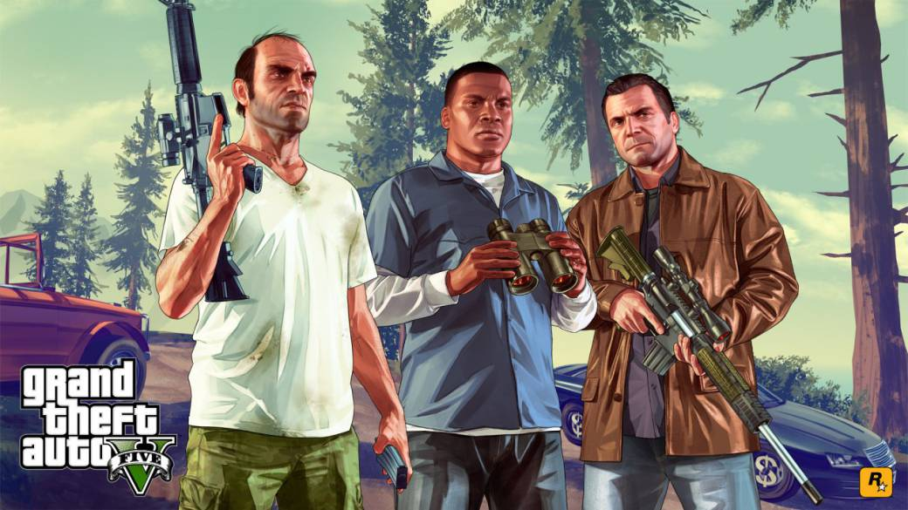

Bienvenidos
GTA V (Grand Theft Auto V) es la quinta entrega numerada de la saga superventas de Rockstar Games. Se trata de una aventura de acción de mundo abierto con multitud de misiones en la que encarnamos a tres personajes distintos: Trevor, Michael y Franklin. Además, cuenta con GTA Online, el modo multijugador en línea de GTA 5. El juego salio a la venta el 17 de septiembre de 2013 para PS3 y Xbox 360, el 18 de noviembre de 2014 en PS4 y Xbox One y, por último, el 14 de abril de 2015 para PC.
Detalles y Conceptos a Conocer
◉ Se puede escoger el personaje que quieras en casi cualquier momento del juego; la cámara se alejará, mostrará el mapa de la ciudad al estilo de "Google Maps" y podrás seleccionar el personaje; incluso esta herramienta se podrá utilizar en una misma misión utilizando las habilidades únicas de cada personaje.
◉ Dependiendo del personaje que se elija, la forma de pararse, caminar, correr y disparar es distinta debido a que cada Protagonista tiene sus propias habilidades, por lo que el juego se centra en la utilización de todas estás.
◉ El sistema de manejo ha sido remodelado de igual forma, dando una sensación más real de conducción ya que los vehículos van mas "pegados al suelo".
◉ Cada protagonista posee un poder: Michael puede poner una cámara lenta al disparar, similar a "Dead Eye" en Red Dead Redemption y "Bullet Time" en Max Payne 3. Trevor puede ponerse mas agresivo de lo normal y hacer mas daño y recibir menos. Franklin puede poner una cámara lenta mientras conduce como se pudo ver en la Saga Midnight Club , esencial para las carreras y misiones de persecución.
Modo de Juego Online
Experimenta GTA Online, un universo online en constante evolución donde puedes pasar de ser un estafador callejero a convertirte en el capo de tu propio imperio criminal. Los jugadores de PlayStation 5 disfrutan de nuevas actualizaciones y mejoras de vehículos de alto rendimiento y mucho más. El multijugador permite hasta 30 jugadores en línea para explorar el mapeado del juego y disputar distintas misiones de forma cooperativa y/o competitiva, además de celebrarse diferentes eventos para mantener la comunidad de GTA V activa.
Personajes Principales:
◉ Franklin Clinton: Un gangster callejero nacido y criado en la ciudad Los Santos en un barrio marginal inspirado en el actual Compton.
◉ Michael Townley (De Santa): Un gangster profesional experto en atracos a bancos retirado que vive a costa del FBI en su servicio de protección de testigos en Los Santos.
◉ Trevor Philips: También un gangster retirado canadiense que vive en el desierto y que posee un negocio de metanfetamina llamado Trevor Philips Enterprise.